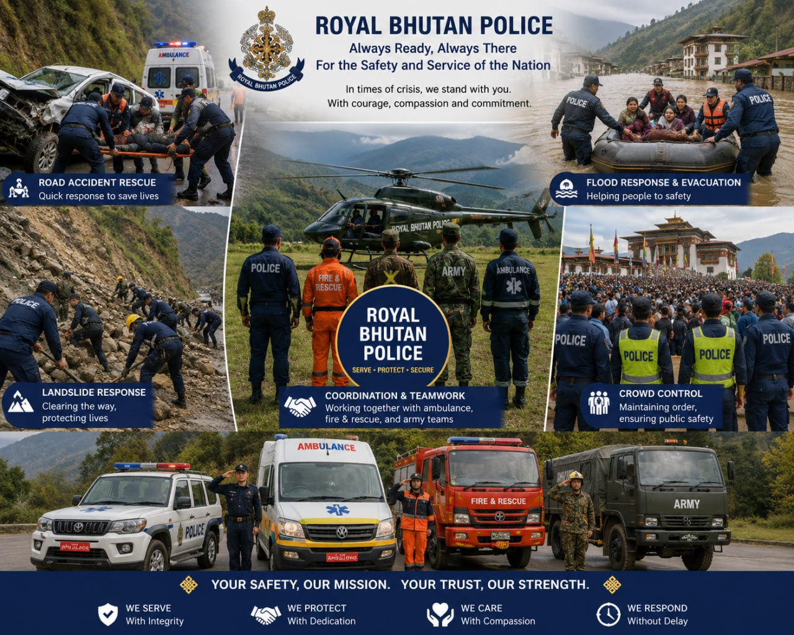

Main Division Squads
The main division squads of the Royal Bhutan Police work together to maintain law and order, protect citizens, and respond to emergencies. These include the Traffic Police, Crime Investigation Division, Special Reserve Police, Communication Division, Training Division, Medical Unit, and Rescue and Disaster Response teams, each responsible for public safety, investigations, emergency response, and community protection.

Brigadier Phub Gyaltshen
Brigadier Phub Gyaltshen is the Chief of Police of the Royal Bhutan Police (RBP). He was graciously appointed to this position by His Majesty The King on February 15, 2026, succeeding to the highest law enforcement role in the country.

Rescue
Police in Bhutan help rescue people during accidents, crimes, and emergencies. They respond quickly to road accidents, disasters, and dangerous situations by providing protection, controlling the scene, helping evacuation, and working with ambulance, fire, and rescue teams to save lives and ensure public safety.

Record
The Royal Bhutan Police (Royal Bhutan Police) has a strong record of helping people during emergencies and disasters in Bhutan. They assist in road accident rescues, disaster response, crowd control during emergencies, and coordination with ambulance, fire, and army teams. During floods, landslides, and other crises, police officers help with evacuation, rescue operations, and maintaining public safety, earning trust for their quick response and service to the nation.